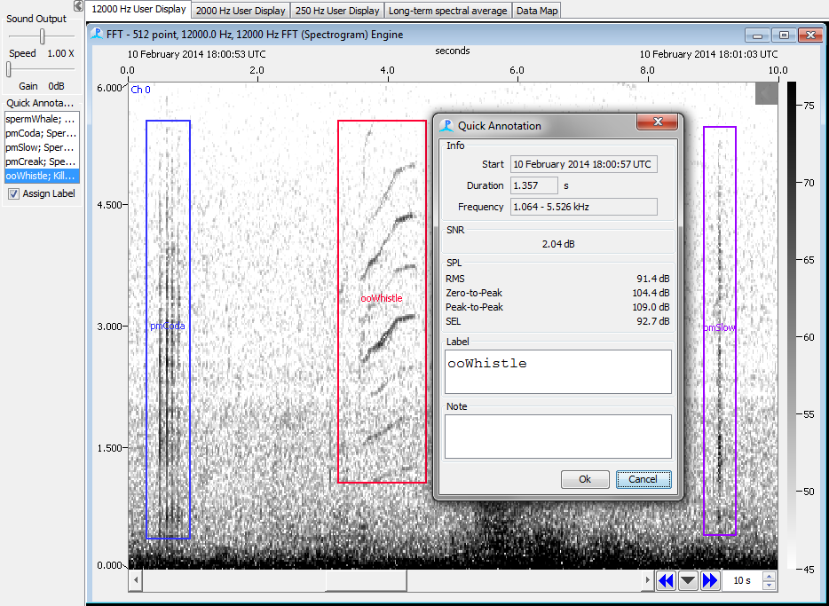

Once configured, simply select the Label from the side panel and drag the mouse across the relevant spectrogram display panel.

If the 'Popup annotation dialog' is enabled, a small dialog will appear where you can enter a short note describing the sound. The Quick Annotation module will also measure signal-to-noise ratio (SNR), and a variety of sound-pressure levels (SPL).
NB: Accurate measurement of SPL requires a calibrated hydrophone and acquisition board that have been correctly configured in the Array Manager and Sound Acquisition modules.
Once a mark is created, you can right click with the mouse close it it's center and a pop-up menu will appear enabling you to edit or delete the mark (this is easier in viewer mode than during real time processing).
You can also drag the edges of the marks with the mouse to alter the time and frequency limits.